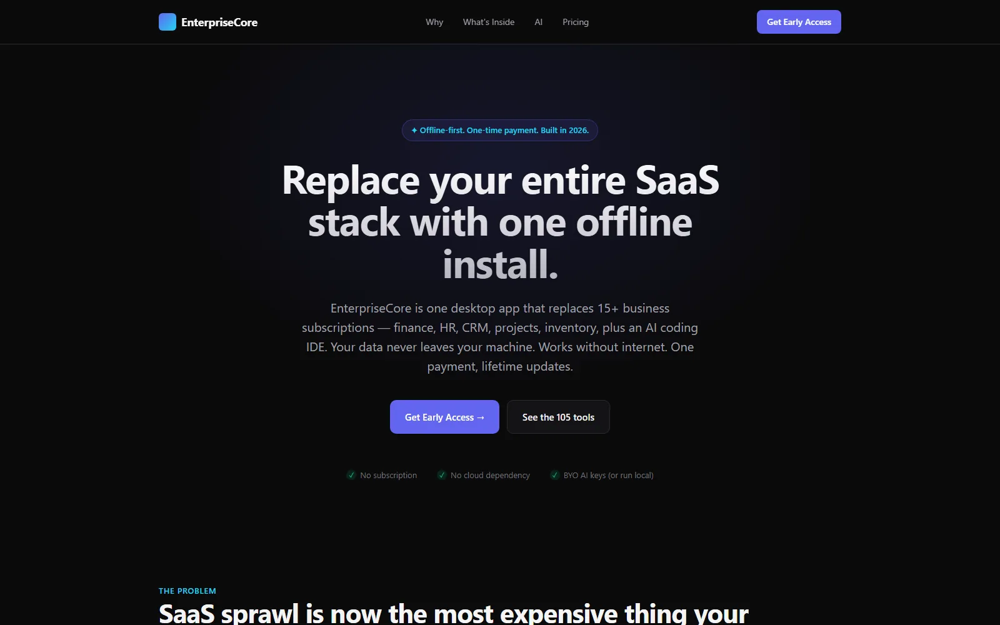
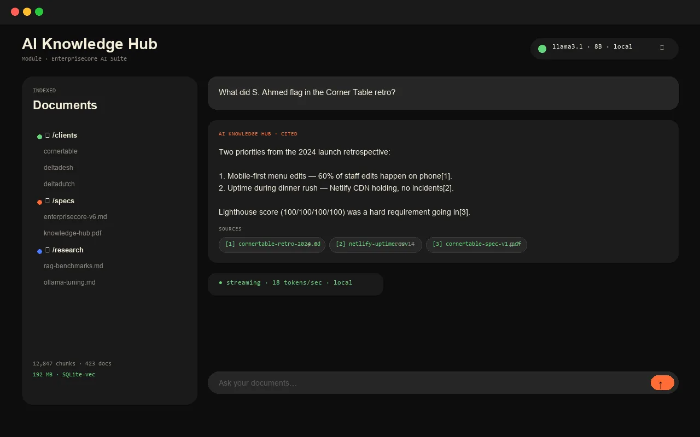

Desktop Live · 2026 Own product
EnterpriseCore
AI Suite.
I built EnterpriseCore because I was tired of paying 15 SaaS subscriptions for things I could install once and own. 130 modules, one binary, offline-first, your data stays on your machine. Shipped over 14 months.

The problem.
Small businesses bleed money on 15+ SaaS subscriptions — accounting, CRM, HR, project management, inventory — and none of them talk to each other. Your data lives across a dozen vendors who can change pricing, terms, or shutter overnight. Multi-tenant cloud apps are also the wrong shape for a 5-person consultancy that just wants something that works, offline, forever.
What I built.
- One installer, 130 modules. Finance, HR, CRM, projects, inventory, marketing, AI coding assistant — all in a single Electron + FastAPI desktop app.
- Offline-first. SQLite + local file storage. No cloud dependency. Works on a plane, in a tunnel, at a client site with bad wifi.
- Bring-your-own AI keys. Anthropic, OpenAI, or Ollama (local). Your prompts never leave your machine unless you point them at a cloud API.
- Three SKUs. Core / +EDU (11 student modules absorbed in v6) / +Verticals.
- 455 tests. Up from 289 before the v6 consolidation that absorbed LinguaBot, SiteForge, CornerTable, Deltadesh, Deltadutch, and 11 student apps as first-class modules.
How I shipped it.
- Spec first. A one-page README per module. Wrote them all before any code.
- Backend before frontend. FastAPI routes + SQLAlchemy models + alembic migrations, all idempotent, all tested.
- Electron last. The Electron shell came in month 9, once the FastAPI app was already self-hosted and working in a browser.
- Code-signed installer. NSIS + Windows code signing without admin elevation. Took longer than it should have.
- v6 consolidation. Absorbed five older standalone products (LinguaBot, SiteForge, CornerTable, Deltadesh, Deltadutch) plus 11 student apps as modules — saving the maintenance burden and giving customers a single install path.
# Each module is a self-contained FastAPI router with # its own SQLAlchemy models, alembic versions, and tests. class Module(BaseModel): slug: str name: str version: str = "1.0.0" requires: list[str] = [] routes: list[Route] def register_all(app: FastAPI) -> int: # Loads + boots all 130 modules in dependency order. n = 0 for mod in sorted(MODULES, key=topo_order): mod.mount(app); n += 1 return n # 130, every release.
Outcomes.

"Replace your entire SaaS stack with one offline install."
— the pitch, and what it actually does
Like what you read? I can ship this for you.
Send a one-line scope and I'll quote within 24h. Three engagement shapes — fixed-price MVP, embeddable widget, or maintenance retainer.